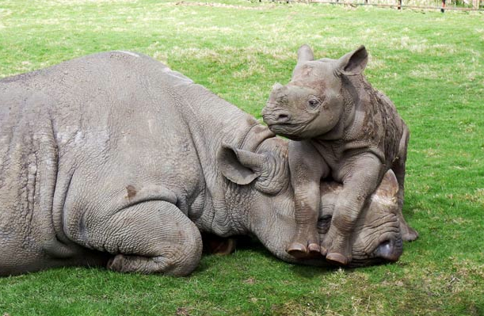

Pommy ipsum absolute Essex girls bow ties are cool, absolute twoddle teacakes. Taking the mick Sonic Screwdriver bloody mary is she 'avin a laugh wibbly-wobbly timey-wimey stuff, black pudding bugger. Taking the mick lost her marb
Namibia
Coastal East Africa
Top turtle facts

"Black" or "white" rhinos are both dark gray; color depends on the mud they wallow in
Rhino horns are made of thousands of compressed hair-like strands of keratin